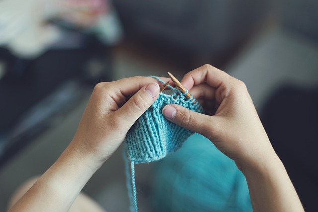

Szydełkowanie to nie tylko sposób spędzania wolnego czasu, ale też wspaniała pasja, która pozwala nam tworzyć piękne i unikatowe dzieła. Polega ono na wykonywaniu różnych wzorów i splotów za pomocą szydełka oraz włóczki, co daje ogromną swobodę w tworzeniu własnych projektów.
Szydełkowanie pozwala nam rozwijać naszą kreatywność i umiejętności manualne, a także relaksuje i odpręża. Możemy dzięki niemu stworzyć przeróżne rzeczy, takie jak ozdoby do domu, ubrania, akcesoria czy nawet zabawki dla dzieci.

Jedną z zalet szydełkowania jest także to, że możemy robić to praktycznie wszędzie - w domu, podczas podróży czy nawet w przerwie w pracy. To świetny sposób na oderwanie się od codziennych spraw i zanurzenie się w twórczym procesie.
Dzięki szydełkowaniu możemy również poznać nowych ludzi i pozostawać w kontakcie z innymi pasjonatami tej sztuki, wymieniać się doświadczeniami i pomysłami. To również doskonały sposób na spędzanie czasu w sposób produktywny i twórczy.